Trabajo grupal n°3
Integrantes del grupo
- Facundo Martin Giacomozzi
- Gabriel Romero
- Lautaro Urquiza
- Federico Pfund
- Matias Canevaro
- Eduardo Luis Gómez
- Sabrina Mantero
- Cinthia Fernanda Segovia
- Martín Alejandro Torres
- Agustin Rodriguez Alvarez
Actividades
Actividad n°1
Responder el cuestionario para asistencia (aula del campus)
Actividad n°2
-
Realizar la siguiente actividad evaluativa de manera grupal
- Crear un nuevo repositorio con el nombre clase8
- Crear tres carpetas: Martes, Miércoles y Jueves
- Guardar en cada carpeta documentos de texto.
- Realizar modificaciones, añadir los cambios y hacer commit utilizando cualquier editor de texto.
-
Crear tres ramas con sus commit
- Crear una nueva rama con el nombre de "Desarrollo".
- Crear una nueva carpeta con el nombre "Viernes" ubicados en la nueva rama.
- Añadir documentos de texto, modificar el documento y realizar los commit (5 modificaciones con sus commit).
- Mergear a la rama auxiliar a la rama main.
- Creamos una nueva rama con el nombre "Proceso".
- Aplicamos los pasos anteriores con una nueva carpeta que diga "Sábado" añadimos documento de texto, guardamos, añadimos, commiteamos (5 commit).
- Y por ultimo mergeamos a la rama main.
- Estando ubicados en la main creamos otra rama nueva con el nombre "tabla".
- Aplicamos los pasos realizados en las ramas anteriores y creamos una carpeta "Lunes", añadimos documentos de texto, guardamos, añadimos, hacemos 5 commit y mergeamos.
-
Eliminamos ramas auxiliares
- Eliminamos solo dos ramas auxiliares. Tener en cuenta que para eliminar las ramas auxiliares se debe estar ubicado en la rama main.
- Comprobar la cantidad de ramas que tiene nuestro proyecto una vez eliminada las dos ramas auxiliares.
- Enviar capturas con el nombre del grupo y de los integrantes (indique puntos trabajados en cada captura realizada) Formato pdf, word, PowerPoint, etc.
Resolución de la actividad
Creamos el repositorio Clase 8

Creamos las tres carpetas Martes, Miércoles y Jueves
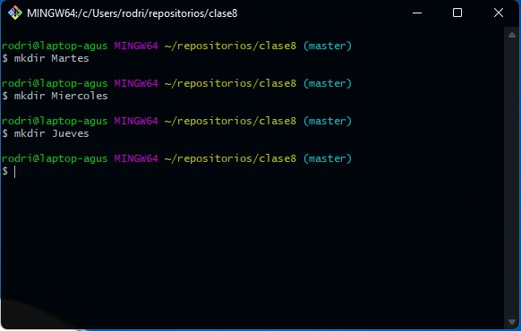
Creamos los documentos en las carpetas Martes, Miércoles y Jueves

Modificamos los documentos

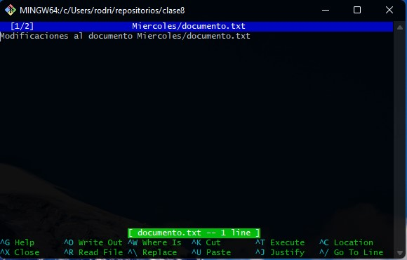

Añadimos al área de preparación los tres documentos y las carpetas

Comentario del primer commit

Creamos tres ramas
Creamos la rama Desarrollo

Creamos la carpeta Viernes y el documento
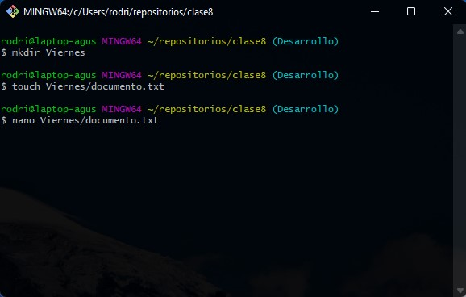
Editamos el documento
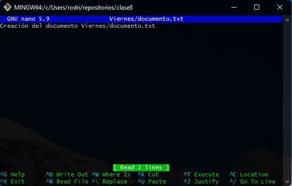
Primer commit de la rama Desarrollo
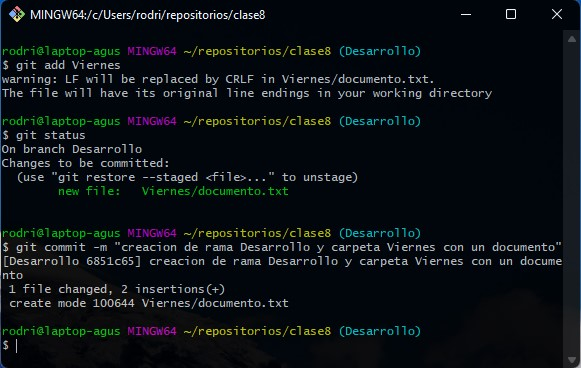
Segundo commit Desarrollo
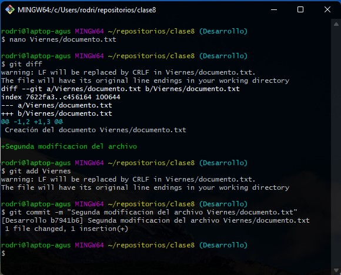
Tercer commit Desarrollo

Cuarto commit Desarrollo
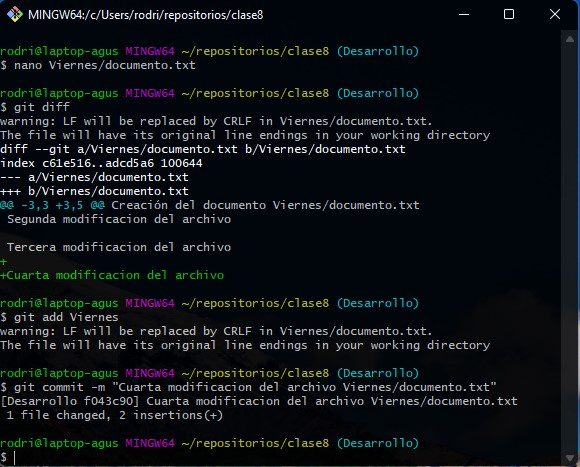
Quinto commit Desarrollo
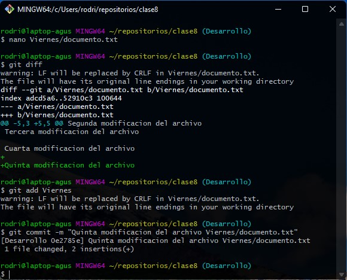
Merge de la rama Desarrollo
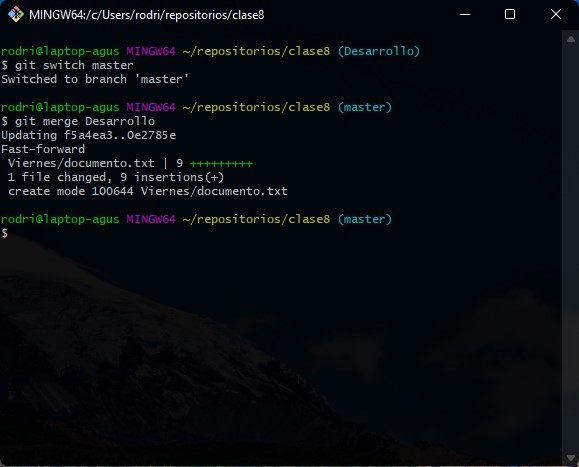
Creamos la rama Proceso con la carpeta Sábado y el documento de texto

Primera edición del documento en la carpeta Sábado
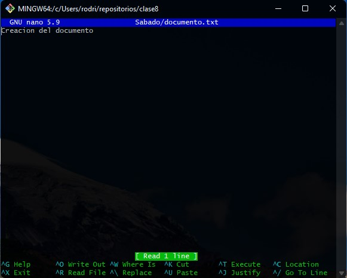
Primer commit en la rama Proceso

Segunda modificación del documento, añadimos y hacemos commit
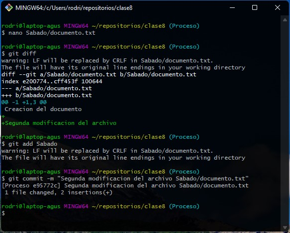
Tercera modificación del documento, añadimos y hacemos commit
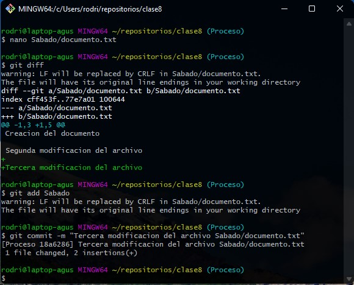
Cuarta modificación del documento, añadimos y hacemos commit
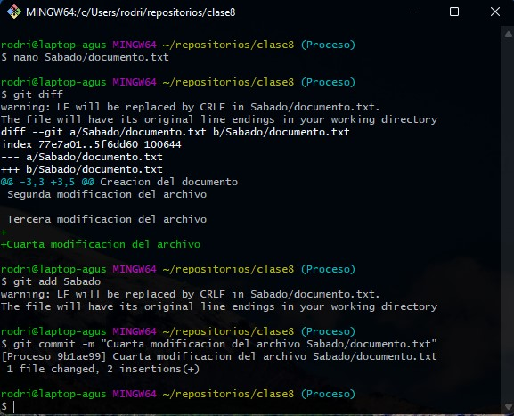
Quinta modificación del documento, añadimos y hacemos commit
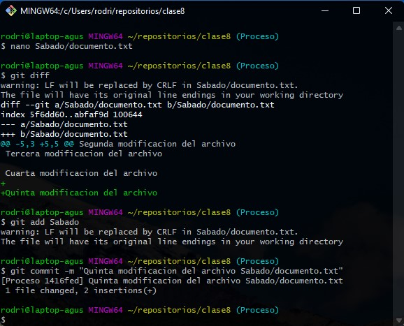
Merge Proceso con la rama Master
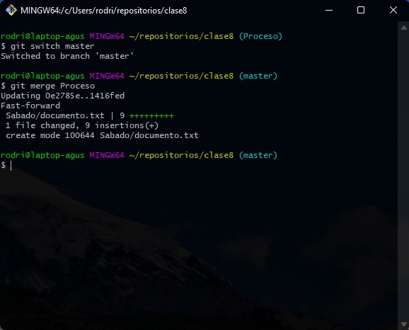
Creamos la rama Tabla y la carpeta Lunes con un documento
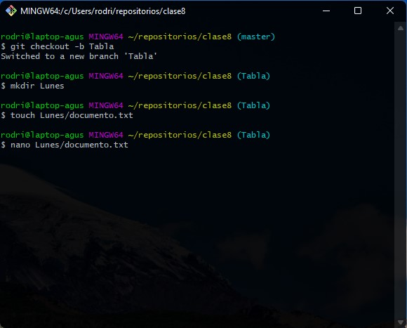
Primera modificación del documento
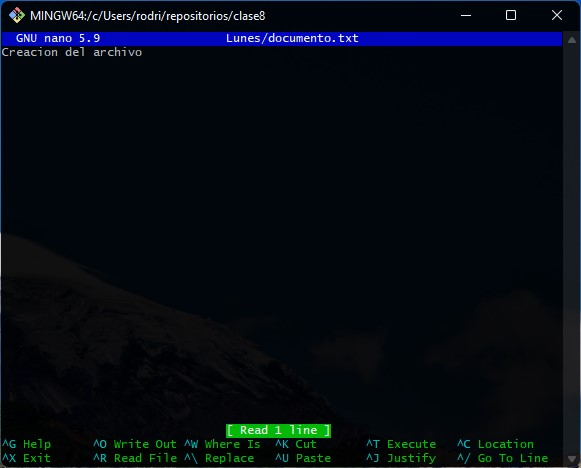
Hacemos el primer commit de la rama Tabla

Hacemos la segunda modificación en la rama Tabla

Hacemos la tercera modificación en la rama Tabla
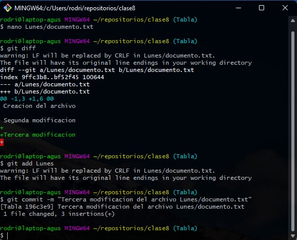
Hacemos la cuarta modificación en la rama Tabla
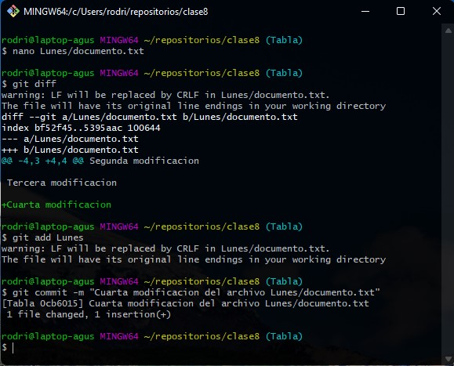
Hacemos la segunda modificación en la rama Tabla
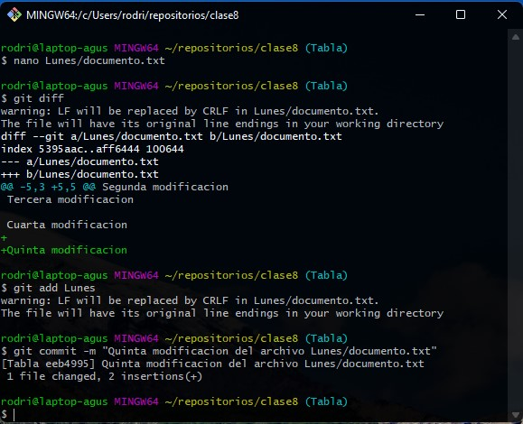
Merge con la rama master

Eliminamos dos ramas auxiliares y vemos que ramas nos quedaron